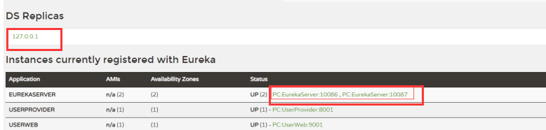

若是不是普通demo，还有别的配置时，需要注意若是服务开不起来可能就是父类依赖中可能会需要<dependencyManagement>这个标签。
1、导入依赖
<dependency>
<groupId>org.springframework.cloud</groupId>
<artifactId>spring-cloud-starter-netflix-eureka-server</artifactId>
<version>2.1.2.RELEASE</version>
</dependency>2、配置文件application.yml
#内置的tomcat服务启动监听端口号
server:
port: 6002
#EurekaServer配置
eureka:
instance:
hostname: eureka6002 #EurekaServer的名字
client:
register-with-eureka: false #此EurekaServer不在注册到其他的注册中心
fetch-registry: false #不在从其他中心中心拉取服务器信息
service-url:
defaultZone: http://eureka6001.com:6001/eureka #注册中心访问地址
---------------------------------------
#内置的tomcat服务启动监听端口号
server:
port: 6001
#EurekaServer配置
eureka:
instance:
hostname: eureka6001
client:
register-with-eureka: false #此EurekaServer不在注册到其他的注册中心
fetch-registry: false #不在从其他中心中心拉取服务器信息
service-url:
defaultZone: http://eureka6002.com:6002/eureka #注册中心访问地址 3、主启动类
@SpringBootApplication //标记这是主启动类
@EnableEurekaServer //标记这是EurekaServer
public class AppStart2 {
public static void main(String[] args) {
SpringApplication.run(AppStart2.class, args);
}
}
1、导入依赖，上面的依赖
2、配置application.yml中添加
eureka:
client:
register-with-eureka: true #允许注册到EurekaServer
fetch-registry: true #从其他中心中心拉取服务器信息
service-url:
defaultZone: http://eureka6002.com:6002/eureka,http://eureka6001.com:6001/eureka #注册中心访问地3、主启动类
@SpringBootApplication
@EnableEurekaClient //标记这是一个Euerka客户端，必须要写
public class ProductProvider_8001 {
public static void main(String[] args) {
SpringApplication.run(ProductProvider_8001.class,args);
}
}访问http://localhost:6001/ 和 http://localhost:6002/

这就是一个demo，缺点很多，比如：在status下面悬停时，在左下角会能够看到IP。